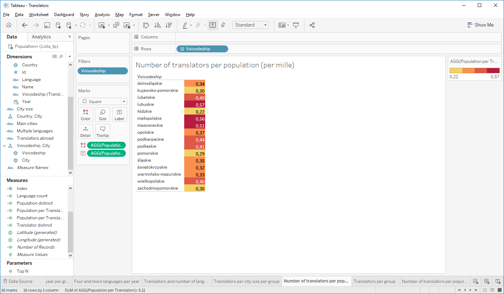

Translators project in Tableau
Download the translators' data from the following link: Translators_list.xlsx
Download the ready report in Tableau from the following link: Translators.twb
The excel file contains three sheets:
1. The Translators sheet contains the list of translators that are certified by the Polish Ministry of Justice. On the list there are their names, languages they translate, citizenship, address (country, voivodeship, city) and the year of licence being granted. [10847 rows]
2. The Population sheet contains a list of cities of Poland and their respective population. The data source is Główny Urząd Statystyczny (Statictics Poland). [930 rows]
3. The Rates sheet contains languages and the language group they belong to according to the Polish law. [52 rows]
- There are four language groups:
- Group I: English, German, French, Russian
- Group II: other European languages and Latin language
- Group III: Non-European languages using latin alphabet
- Group IV: Non-European languages using non-latin alphabet
The rates are for one page of 1125 characters from Polish in PLN.
Connect to the database and create the following connections between the tables.
1. Top 20 languages in Poland
Conclusions: German is the most common language among the certified translators in Poland. Among the largest Polish cities Warszawa, the capital, is the leader in terms of the number of translators, followed by Kraków. The most popular language in Warszawa is English.
Create and use the Measure: Language count
Create and use the Dimension: Main cities
Create and use the Parameter: Top N
2. Translators abroad
Conclusions: Most translators live in Europe: Germany, United Kingdom, Spain. However, some live in more distant corners of the world, e.g. Malaysia, Mexico.
Create and use the Measure: Translator distinct
3. Licences granted per year
Conclusions: Most licences were granted in 2005. At the time, licences were granted based on working experience rather than exam. Since 2008, between 90-205 licences per year are granted.
4. Licences granted per year per group
Conclusions: The languages from the Group I are the most common in terms of licences granted per year. However, since 2010 we have observed an increasing share of Group II languages. In 2012, 6.6% of licences were granted to translators of Group IV languages.
5. Four and more languages per year
Conclusions: There are 13 translators who are certified in 4 or 5 languages. Most of them were sworn in 2005. However, one of the translators got all licences in 2015.
Create and use the Measure: Index. Convert the Measure to Discrete.
6. Translators and number of languages
Conclusions: Most of the translators are sworn in one language. However, 714 of them have a licence in a second language.
Create and use the Dimension: Multiple languages
7. Translators per city size per group
Conclusions: Groups I and II are the most popular, regardless of the city size. The groups III and IV are wider represented in small cities than in middle-size cities. The total number of translators is almost equal in large and small cities.
Create and use the Dimension: City size
8. Number of translators per population (per mille)
Conclusions: Lubuskie, małopolskie and mazowieckie have most translators per capita. There are the least translators per capita in łódzkie and pomorskie. Lubuskie is a bit of surprise because, as demonstrated in one of the previous slides, Warszawa and Kraków are home to a great number of translators.
Create and use the Measure: Population distinct
Create and use the Measure: Population per Translators
9. Translators per group
Conclusions: Group I is dominant among translators, whereas group III is the least popular.
10. Number of translators per population (per mille) (index)
Assuming that in some voivodeships there may live translators that specialize in non-European languages a special weight (index) was applied for groups II, III, and IV. The index was based on rates. The higher the group the higher the value of the index.
Conclusions: Applying weights (index) didn't change much in translator per population ranking. This is because the translators of langauge Groups III and IV represent around 1.5% of all translators.
Create and use the Measure: Population per Translators (index)